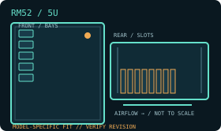

[ MODEL IDENTIFICATION // RM52 ]
SilverStone RM52 5U rackmount chassis
A 5U rack chassis with model-specific drive, PSU and expansion layouts. Match the enclosure revision, backplane and rail kit before installation.

MODEL NOTE: This record covers the RM52 only. Options, revision-dependent PSU support and installed bay modules may change fit; verify labels and the manufacturer manual before buying replacement parts.
Dimensions & fit specifications
| Rack units / external dimensions | 5U; 440 × 220 × 605 mm (W × H × D) with rear fan cage; 560 mm deep without it; 11.45 kg net. Rails and rear cables extend beyond the chassis body. |
|---|---|
| Motherboard compatibility | SSI-EEB, SSI-CEB, E-ATX, ATX, Micro-ATX and Mini-ITX. |
| PSU / power compatibility | Primary bay accepts PS/2 ATX, Mini Redundant or 2U Redundant PSU (V3.0+); secondary bay accepts SFX/SFX-L and uses a shared 3.5-inch position. The documented main-PSU depth is 160–190 mm depending on cage configuration; confirm cable exit clearance. |
| Drive bays / backplane | Two internal 3.5-inch positions (or three 2.5-inch); an additional two 3.5-inch mounts share space with the secondary SFX PSU; four 2.5-inch positions. Actual count depends on PSU and cage arrangement. Base layout does not specify a hot-swap backplane. |
| Riser / PCIe | Eight standard-height PCI/PCIe expansion slots. Graphics card length up to 512 mm only with front fans/radiators absent and internal radiator bracket removed; published alternate limit is 365 mm with two radiators/fans of combined thickness 53 mm. Width limit also depends on retaining bracket. |
| Cooling / service clearances | Front supports six 120 mm fans or two 360 mm radiators; rear supports one 120/140 mm fan plus an optional rear cage with two 80 mm fans (included). CPU cooler height: 181 mm with card retainer or 192 mm without. Front cooling and radiator brackets reduce GPU length. |
Compatibility & service notes
Select GPU length from the matching cooling configuration, not the maximum bare-chassis figure. The SFX/SFX-L PSU uses a 3.5-inch bracket, and storage space is shared. Remove/install radiator brackets and the rear fan cage with rear service access.
- Measure the complete installed depth: chassis, rack ears/slides, cable-management arm if fitted, connectors and cable bend radius.
- Maintain clear front intake and rear exhaust access; do not obstruct removable fan, drive, PSU or backplane service paths.
- Before hot-swap work, confirm the controller/backplane interface and follow the chassis manual’s power-down and ESD procedure.
Manufacturer sources
- SilverStone — RM52 product specificationsManufacturer product page for the RM52 5U layout and component fit.
- SilverStone — RM52 installation manual v3 (PDF)Manufacturer manual for drives, cooling hardware, expansion cards and chassis assembly.